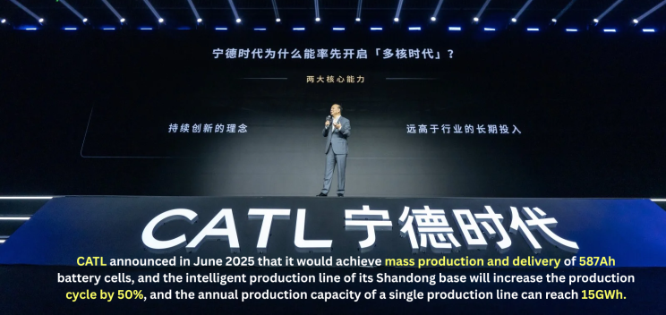
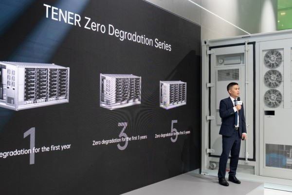
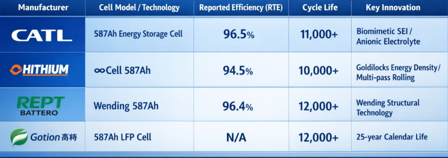
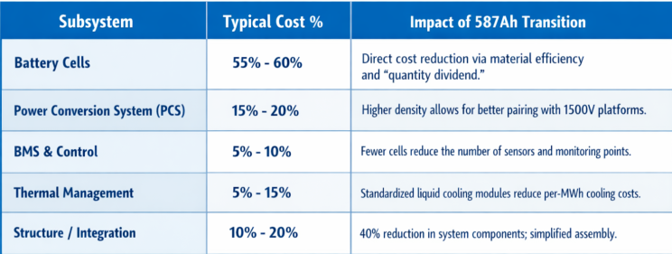
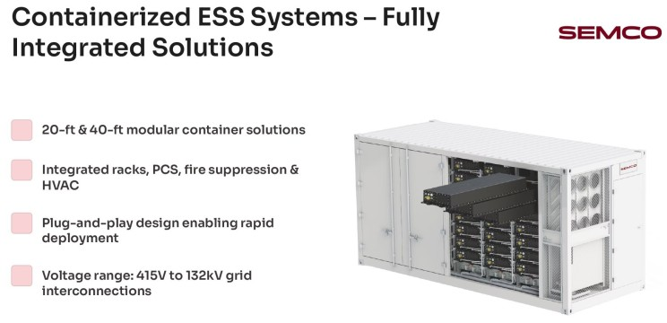
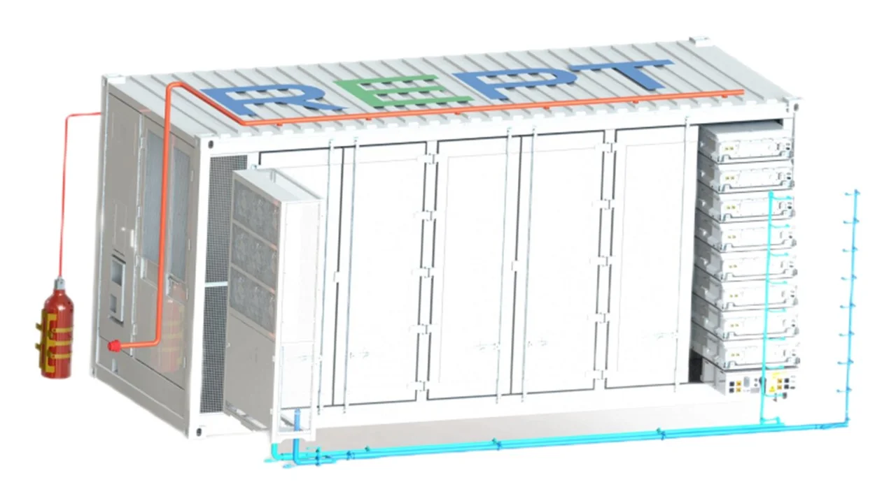
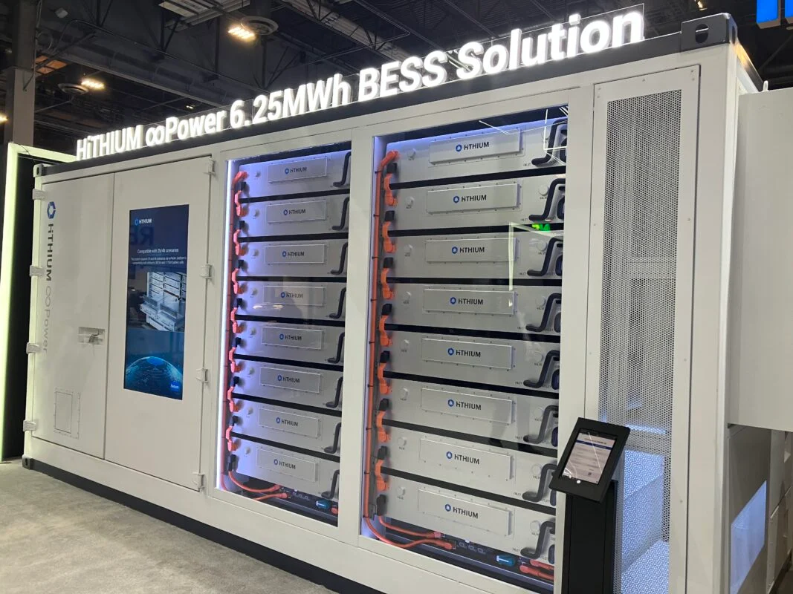
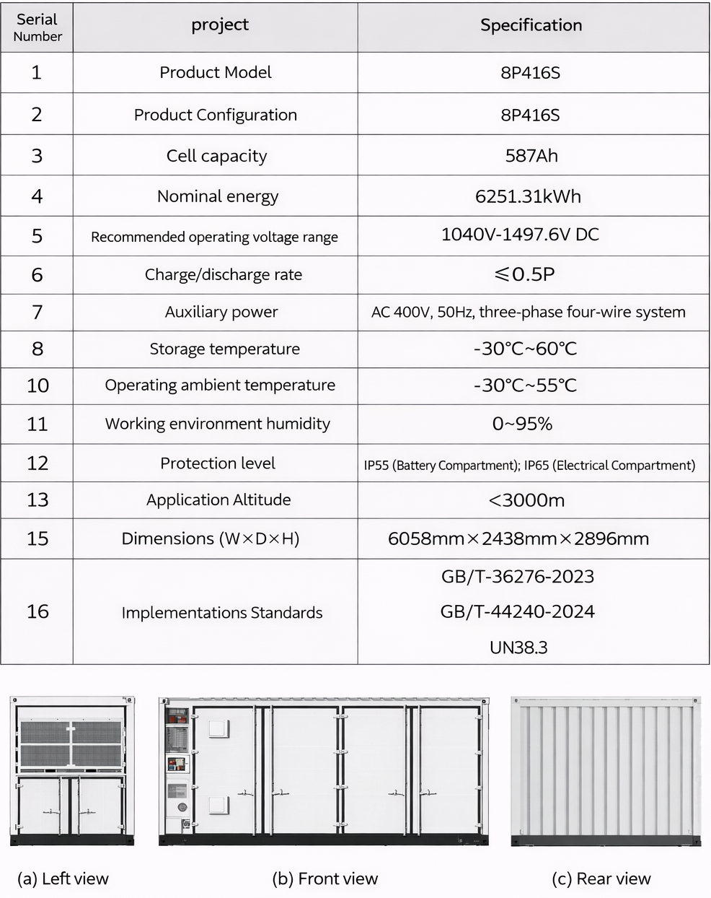
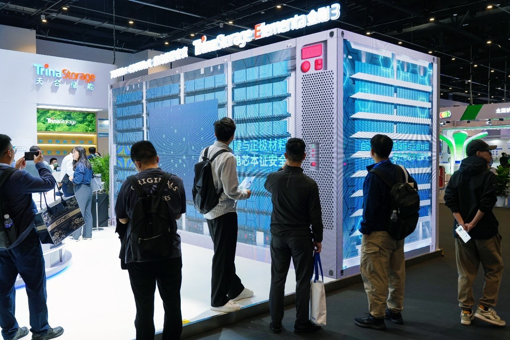
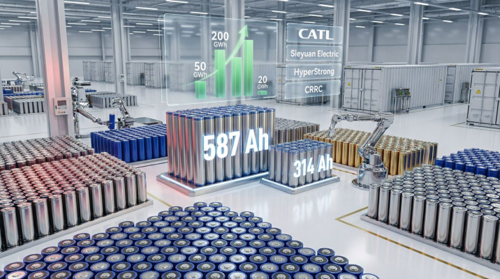

The global transition toward a decarbonized energy grid has fundamentally altered the requirements for stationary energy storage. As intermittent renewable energy sources, such as solar and wind, increase their penetration into the primary power supply, the demand for large-scale, high-density, and ultra-reliable Battery Energy Storage Systems (BESS) has surged.
The 587Ah cell is the center piece of a new era in which utility-scale storage systems are moving toward 6.25MWh+ per 20-foot container, driven by innovations in material science, extreme manufacturing precision, and multi-objective engineering optimization.
The Strategic Shift to the 500Ah+ Era
In the first half of 2025, the technology iteration of the third-generation large-capacity battery cell will gradually differentiate into two camps, one is the system integrator camp represented by Sungrow , betting on specifications such as 684Ah, 625Ah, and 688Ah; One is the camp of battery cell manufacturers led by CATL , locking 587Ah; The transitional product 392Ah specification bet on by REPT BATTERO and China Innovation Airlines will also occupy a place in a short period of time with the advantage of production line reuse.
Since the second half of the year, the mainstreaming trend of 587Ah battery cells has accelerated significantly, showing a trend of "leading the head and following up the industrial chain", and more than 10 companies have released it 587Ah cell or system product equipped with the cell. As an industry pioneer, CATL announced in June 2025 that it would achieve mass production and delivery of 587Ah battery cells, and the intelligent production line of its Shandong base will increase the production cycle by 50%, and the annual production capacity of a single production line can reach 15GWh.

The Engineering Logic of the 587Ah Form Factor
The 587Ah capacity was not chosen arbitrarily. It is the result of a complex calculation involving the spatial constraints of a standard 20-foot container, the 1500V voltage ceiling of modern Power Conversion Systems (PCS), and the strict weight limits imposed on the transportation of hazardous goods. Most international and domestic transportation regulations cap the weight of a 20-foot energy storage container at approximately 45 to 50 tons to comply with crane and skeleton truck limitations. By optimizing the cell capacity to 587Ah, integrators can achieve a system-level energy density of 6.25MWh while keeping the total weight within these critical legal thresholds.

The 587Ah format allows for a reduction in the total number of battery modules and components. For instance, a 587Ah-based system can reduce the total number of components in a 6.25MWh system from 30,000 to 18,000. This 40% reduction in parts not only simplifies the assembly process but also reduces potential failure points, thereby enhancing the overall reliability of the BESS unit.
Technological Breakthroughs in Cell Chemistry and Structure
The successful mass production of a 587Ah cell requires addressing the inherent challenges of large-format batteries, such as internal resistance, heat dissipation, and ionic transport efficiency. Manufacturers have introduced several key innovations to ensure that these massive cells perform reliably over a 20-to-25-year service life.
Advanced Material Systems and SEI Technology
To achieve an energy density of 434Wh/L, a 10% increase over the previous generation, manufacturers like CATL have moved beyond simple physical scaling. They have employed high-density coating techniques and constructed fast ion channels within the cathode material to improve the kinetics of lithium-ion intercalation and deintercalation.
A critical innovation is the development of biomimetic Solid Electrolyte Interphase (SEI) film technology. During the charging and discharging process, the SEI layer naturally thickens, which increases impedance and consumes active lithium. By utilizing self-healing anionic electrolyte technology and multifunctional composite additives, the 587Ah cell can delay this thickening process. This "self-repair" mechanism is vital for achieving the goal of zero degradation during the first five years of operation, a standard set by systems like CATL's TENER series.

Internal Resistance and Round-Trip Efficiency (RTE)
As cell dimensions increase, the path for electron flow typically lengthens, which can lead to higher internal resistance and reduced efficiency. The 587Ah cells combat this through refined mechanical designs that minimize ohmic, reaction, and concentration polarization. These improvements have pushed the initial round-trip efficiency (RTE) of the cells to as high as 96.5%. For a utility-scale project, a 1% to 2% increase in RTE translates into significant savings in energy costs over the decades of the project's lifespan.

Wending Technology and Structural Optimization
REPT Battero’s "Wending" technology provides a prime example of how structural changes can enhance cell performance. By shortening the distance between the cell's top cover and the internal electrode assembly, the Wending design increases space utilization and improves the stability of the internal tabs. This structural efficiency allows for higher gravimetric energy densities, reaching up to 190Wh/kg, and supports ultra-long cycle lives of 12,000 cycles or more.

Economic Viability and LCOS Reduction
The primary motivation for the global energy storage market to adopt 587Ah cells is the potential for a significant reduction in the Levelized Cost of Storage (LCOS). By increasing the energy density of each container and extending the system's lifespan, the cost per kilowatt-hour of energy delivered is dramatically optimized.
CAPEX Deconstruction: The "Quantity Dividend"
The initial capital expenditure (CAPEX) for a BESS project is heavily influenced by the cost of the cells, which typically accounts for 55% to 60% of the total system cost. While a single 587Ah cell is more expensive than a 280Ah cell, the reduction in the total number of cells required per MWh leads to significant savings in "Balance of System" (BoS) costs.

By using 587Ah cells, the total number of battery modules can be reduced by 33%, and system integration costs can be reduced by 15%. For a 200MWh power station, the equipment footprint is reduced by 20%, saving on land costs and site preparation.
Operational Efficiency and Revenue
The economic value of 587Ah systems extends beyond initial costs. The increase in round-trip efficiency and the extension of the cycle life lead to a 5% increase in the internal rate of return (IRR) over the project's entire lifecycle. Furthermore, the "zero degradation" capability for the first five years allows operators to maintain maximum discharge capacity during the early years of the project, which are typically the most critical for revenue generation and debt servicing.
Current LCOS for high-capacity systems is estimated to be between 0.5 and 0.9 RMB/kWh, with projections suggesting a drop to 0.3 to 0.5 RMB/kWh within three to five years as the supply chain and manufacturing scale continue to mature.
Know More About Semco Infratech's BESS Assembly Solutions
Explore how Semco Infratech's automatic BESS assembly lines can transform your battery manufacturing operations. The company offers comprehensive solutions tailored to your production scale—from startup R&D operations to full commercial manufacturing volumes. Semco's integrated approach combines state-of-the-art equipment, intelligent process management, and expert technical support to establish efficient, scalable battery production capabilities.

Contact Semco Infratech to discuss your BESS manufacturing requirements and discover how automatic assembly solutions can enhance your production efficiency, ensure product quality, and accelerate your path to market competitiveness.
For demos Connect at sales@semcoindia.com | +91-8920681227 | www.semcoinfratech.com
System Integration: The Move to 6.25MWh Containers
The 587Ah cell is the fundamental building block for the next generation of 20-foot containerized storage systems. Standardizing at 6.25MWh represents a significant leap from the 3.7MWh and 5.0MWh systems that dominated the market previously.
The 1500V Class PCS Platform
Modern BESS designs are increasingly adopting 1500V DC architectures to minimize current-related losses and reduce the thickness of copper cabling. The 587Ah cell is designed to be fully compatible with these high-voltage platforms. Integrators such as Sungrow, Sineng, Kehua, and Huawei are already offering PCS solutions optimized for these high-capacity configurations.
Thermal Management: Liquid Cooling as the Standard
As power densities increase, air cooling becomes insufficient for maintaining the temperature uniformity required for long-life batteries. Liquid cooling has become the industry standard for 587Ah-based systems. Advanced liquid cooling systems, such as those used by REPT Battero, utilize parallel flow channel designs that reduce flow resistance by 85% and maintain temperature differences between cells within a range of less than 3°C. This precision is critical because even small temperature variations can lead to uneven aging and premature failure of the battery pack.

Maintenance Revolution
The simplified architecture of 587Ah systems also facilitates easier maintenance. Hithium's ∞Power 6.25MWh system, for example, utilizes external active balancing technology that allows for maintenance without shutting down the entire system, potentially cutting service hours by 90%. Innovations such as three-way cutoff valves in the liquid cooling lines allow for faster repairs, reducing fault-handling time by over 60%.

Regional Market Dynamics and Deployment
The rise of the 587Ah specification is not a simple technological leap, but a "gold standard" spontaneously formed by the industry under the triple pressure of policy guidance, system demand and cost control.
The essence of 587Ah is to solve the core contradiction in the development of large capacity battery cells - how to improve energy density while taking into account safety, system compatibility and cost control.
- Haichen Energy Storage concluded through a multi-objective optimization algorithm that 587Ah is the optimal balance between system integration efficiency and cost, and its size design of 73.5×286×216mm not only meets the standard weight limit of 20-foot containers (45 tons of dangerous goods transportation requirements), but also achieves a single-cabin capacity of 6.25MWh, which just meets the requirements of national standard zoning.
- CATL is based on the design of a 20-foot standard container, combined with 1500V PCS voltage and mainstream power segments, and determines the solution of the 4-column architecture through precise calculation.
This design brings significant advantages, compared with the previous generation product, the number of battery modules has been reduced from 48 to 32, the number of electrical boxes has been reduced by 33%, and the total number of system components has decreased from about 30,000 to 18,000, a decrease of 40%, directly driving the cost of system integration to a 15% reduction.
In terms of energy density, CATL products reached 434Wh/L, an increase of 10% over the previous generation, and a 25% increase in system energy density; Ruipu Lanjun and sea based energy storage products have also exceeded 430Wh/L. The life performance is also impressive, with sea-based energy storage increasing the cycle life to 12,000 times through material innovation, and CATL ensuring slow capacity decay over an operating cycle of more than 20 years through self-healing anionic electrolyte technology.

More importantly, these performance indicators are not laboratory data - CATL has achieved PPB-level control of the single defect rate through more than 1,200 tests and verifications, and the self-discharge failure rate is reduced by an order of magnitude compared with traditional laminated batteries, ensuring reliability in large-scale applications. Security breakthroughs will also clear the biggest obstacle to the mainstreaming of 587Ah. CATL has built a "three-dimensional defense system", through the synergy of safety electrolyte, non-diffusion anode, and heat-resistant isolation film, so that the battery cell can achieve non-fire and non-explosion in abuse scenarios such as overcharging, thermal runaway, and needle puncture, and successfully passed the two national compulsory standard tests of GB/T36276 and GB 44240.
Sea-based energy storage innovatively introduces 3D three-dimensional liquid cold plates and temperature-resistant 1200°C heat-resistant partitions to control the temperature difference of the system within 2.5°C and effectively inhibit the heat diffusion rate. It is worth mentioning that the mainstreaming process of 587Ah will also promote the upgrading of energy storage industry standards. The current phenomenon of "parameter inflation" in the industry - some enterprises overemphasize laboratory data and ignore practical application performance, is being corrected by the "real performance" of 587Ah.
The "true performance, real reliability, real safety, and real delivery" standards proposed by CATL and more than 1,200 testing and verification systems of Haichen Energy Storage are becoming new benchmarks in the industry, promoting the return of energy storage products from "paper parameters" to "actual value".
- Cairi Energy announced that it has the mass production and delivery capacity of a 6.25MWh energy storage container system based on 587Ah battery cells, which shows More and more system integrators are recognizing and standing in line with 587Ah battery cells.
- In the first half of the year, integrators such as Nandu Power, Inpai Battery, CRRC Zhuzhou Institute, and JinkoSolar exhibited a 6.25MWh system based on 587Ah battery cells; Trina Energy Storage Haibo Strang is also based on The 587Ah battery cell has developed a 7MWh system and a 7.81MWh system.

The 587Ah battery cell has an initial charge-discharge cycle energy efficiency (RTE) of 96.5% and a cycle life of more than 12,000 cycles, which just matches the demand for "high reliability and long cycle" in the power market.
From the perspective of application, CATL has led the market-oriented application of 587Ah energy storage cells, and it is reported that its 587Ah energy storage cells will be officially delivered to the Middle East market (Abu Dhabi project) in November.
In addition to the Middle East project, CATL 587Ah has also received orders from energy storage system integration giants such as CRRC Zhuzhou and Haibo Strang.

In addition, in July, Zhiguang Energy Storage and Haichen Energy Storage jointly released the third-generation cascade high-voltage large-capacity energy storage system based on ∞Cell 587Ah large-capacity battery, which marked the complete landing of the world's first large-capacity energy storage battery from technology release to closed-loop application.
India: A Growing Hub for BESS Manufacturing
India is rapidly emerging as a critical market for BESS, supported by the national goal of 500GW of non-fossil capacity by 2030. The Indian government’s Viability Gap Funding (VGF) program, which covers up to 40% of capital costs, has been a major catalyst for the sector.
In January 2026, GoodEnough Energy commissioned India's largest BESS gigafactory in Noida, Uttar Pradesh, with an initial capacity of 7GWh and plans to expand to 25GWh within three years. This move is aimed at reducing India’s dependence on Chinese imports and establishing a local ecosystem for high-capacity battery manufacturing. Other firms, such as Trinasolar, are also introducing their Elementa 3 systems to the Indian market, which utilize 587Ah liquid-cooled cells to achieve a 12.5% reduction in LCOS.
Europe and North America: Focus on Regulation and Compliance
In Europe and North America, the adoption of 587Ah cells is closely tied to regulatory compliance and safety standards. The EU Battery Regulation (2023/1542) mandates strict requirements for carbon footprint declarations, material recovery targets, and due diligence. Systems utilizing 587Ah cells must comply with certifications like IEC 62619, UL 9540A, and UN 38.3 to ensure their viability in these markets.
The Road ahead faces Challenges
- Although 587Ah battery cells have significant advantages in technical performance and safety, they also need to deal with practical challenges such as mass production costs, market competition, and industry standards in the process of moving to the mainstream.
- In addition, the size and capacity of 587Ah cells have been greatly upgraded, and the accuracy, automation level and process parameters of production equipment are more demanding, which may lead to large-scale commercial application of 587Ah cells in the short term.
- In terms of safety, although the manufacturers that lead this specification claim to ensure safety through technical means, large-capacity battery cells produce more heat and gas during thermal runaway, accumulate heat faster, and have extremely high requirements for safety design.
- In addition, with the increase of battery cell capacity, the difficulty of consistency control increases, which is also a common problem in large-capacity battery cells.
- From the perspective of market competition, there are a variety of large-capacity battery cell specifications on the market (such as 392Ah, 472Ah, 628Ah, etc.), different manufacturers have different technical routes and product positioning, 392Ah cells have production line compatibility and rapid mass production capabilities, 684Ah cells are behind the optical storage leader Sungrow, EVE lithium energy 628Ah battery cells have successfully entered the bidding of central state-owned enterprises, these strong competitors will form competitive pressure on 587Ah battery cells.
From the perspective of standards and specifications, the energy storage industry standards have not yet been fully unified, and there are differences in battery cell specifications, interfaces, system integration, etc., resulting in complex system integration and fragmentation of operation and maintenance management.
Let’s Talk BESS – The Future is Being Built Now.
I invite industry leaders, developers, EPC players, OEMs, policymakers, and energy innovators to join me for an open discussion on Battery Energy Storage Solutions (BESS).
The future is accelerating toward 578Ah and above battery cell capacities — redefining system density, cost per MWh, and container optimization.
Let’s discuss: The shift toward high-capacity cells (314Ah → 578Ah+) Containerized BESS architecture & DC cabin-level testing.